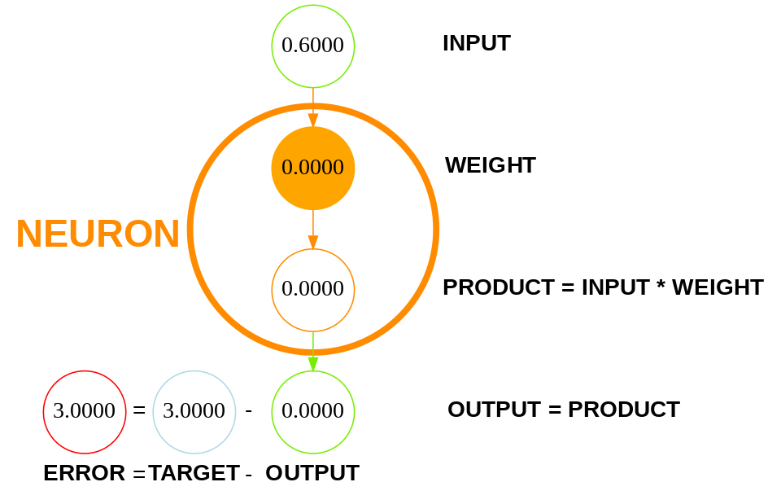
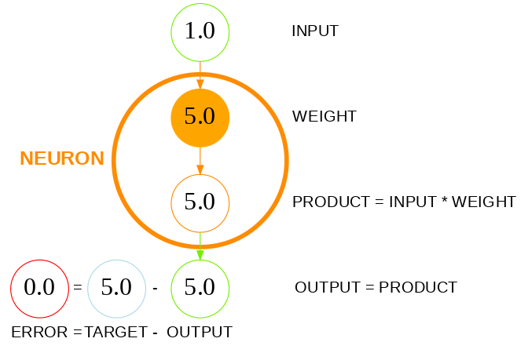

A NEURON needs at least one PARAMETER to do anything useful.
So our NEURON will have one: WEIGHT.
To learn from its own ERRORS, our NEURON also needs a CHANGE RULE — to change its PARAMETER step by step.
We're going to build a machine brain that can multiply any number by 5.0.
In this scenario, the INPUT represents the number being multiplied, and the OUTPUT represents the result of the multiplication.
Let's call this brain the Multiplier-by-Five.
As said, the brain will have a single PARAMETER: WEIGHT.
The brain will be a formula like this:
OUTPUT = INPUT * WEIGHT
We need to find the correct PARAMETER: WEIGHT.
Suppose we don't yet know what the PARAMETER should be, so let's start by setting it to zero:
WEIGHT = 0.0
At first, the brain will generate nonsense, since with any INPUT the OUTPUT is zero.
We will use this training DATASET, which has two EXAMPLES:
|
INPUT
|
TARGET
|
|
|
EXAMPLE1
|
0.6
|
3.0
|
|
EXAMPLE2
|
1.0
|
5.0
|
The TARGET represents the correct OUTPUT.
EXAMPLE1 means when the INPUT is 0.6, the OUTPUT must be 3.0.
EXAMPLE2 means when the INPUT is 1.0, the OUTPUT must be 5.0.
So, our DATASET contains two EXAMPLES:
EXAMPLES = 2
During TRAINING, in each LESSON, the brain changes its PARAMETER so that the OUTPUT gets closer to the TARGET.
The brain changes the PARAMETER using this CHANGE RULE:
PARAMETER_change = ERROR
PARAMETER = PARAMETER + PARAMETER_change
Because the brain has just one PARAMETER — WEIGHT — we obtain:
WEIGHT_change = ERROR
WEIGHT = WEIGHT + WEIGHT_change
Don't worry — each step is simple. Just follow the calculations below.
WEIGHT = 0.0
EXAMPLE1:
INPUT = 0.6
TARGET = 3.0
PRODUCT = INPUT * WEIGHT = 0.6 * 0.0 = 0.0
OUTPUT = PRODUCT = 0.0
ERROR = TARGET − OUTPUT = 3.0 − 0.0 = 3.0
The ERROR tells us how far the OUTPUT is from the TARGET.

The brain changes the PARAMETER that caused this ERROR.
Imagine the brain asking itself:
"How should I change my WEIGHT so the OUTPUT gets closer to the TARGET?"
The ERROR provides the answer:
"Your OUTPUT is 3.0 below the TARGET, so increase the WEIGHT by the exact same 3.0."
And that's exactly what the SIMPLEST CHANGE RULE tells us to do:
WEIGHT_change = ERROR
WEIGHT = WEIGHT + WEIGHT_change
WEIGHT_change = ERROR = 3.0
WEIGHT = WEIGHT + WEIGHT_change = 0.0 + 3.0 = 3.0
So the WEIGHT becomes 3.0.
The brain has just improved itself.
Now, if it receives the same INPUT of 0.6, the OUTPUT becomes 1.8 (0.6 * 3.0) — which is closer to the TARGET (3.0) than the previous OUTPUT (0.0) was.
The ERROR becomes smaller:
ERROR = 1.2
LESSON 1 ends here.
WEIGHT = 3.0
EXAMPLE 2:
INPUT = 1.0
TARGET = 5.0
PRODUCT = INPUT * WEIGHT = 1.0 * 3.0 = 3.0
OUTPUT = PRODUCT = 3.0
ERROR = TARGET − OUTPUT = 5.0 − 3.0 = 2.0
The ERROR tells us how far the OUTPUT is off from the TARGET.
The brain changes the PARAMETER that caused this ERROR.
Imagine the brain asking itself:
"How should I change my WEIGHT so the OUTPUT gets closer to the TARGET?"
The ERROR provides the answer:
"Your OUTPUT is 2.0 below the TARGET, so increase the WEIGHT by the exact same 2.0."
And that's exactly what the SIMPLEST CHANGE RULE tells us to do:
WEIGHT_change = ERROR
WEIGHT = WEIGHT + WEIGHT_change
WEIGHT_change = ERROR = 2.0
WEIGHT = WEIGHT + WEIGHT_change = 3.0 + 2.0 = 5.0
So the WEIGHT becomes 5.0.
The brain has just improved itself again.
Now, if it receives the same INPUT of 1.0, the OUTPUT becomes 5.0 (1.0 * 5.0) — which is closer to the TARGET (5.0) than the previous OUTPUT (3.0) was.
Wait — it's not just closer. It's exact!
The OUTPUT is now 5.0 — exactly the same as the TARGET.
The ERROR becomes zero:
ERROR = 0.0

LESSON 2 ends here.
To test the brain, we give it a new EXAMPLE it has never seen before.
WEIGHT = 5.0
EXAMPLE for TESTING:
INPUT = 10.0
TARGET = 50.0
PRODUCT = INPUT * WEIGHT = 10.0 * 5.0 = 50.0
OUTPUT = PRODUCT = 50.0
ERROR = TARGET − OUTPUT = 50.0 − 50.0 = 0.0
Since ERROR = 0.0, this brain works perfectly!
It has learned the rule: multiply any number by 5.0.
The Multiplier-by-Five can now solve problems it has never encountered before.
The brain is now this formula:
OUTPUT = INPUT * 5.0
Just click RUN.
TRAIN THE BRAIN 🧠
TEST THE BRAIN 🧠
Here, we use standard Python code.
If you have any questions about this code, remember this: in today’s world, knowing how to find answers is a superpower.
You can copy the code, paste it into an AI assistant like ChatGPT, and ask something like: "Can you explain this code line by line?" This is one of the best ways to learn.
In Lesson 5, instead of using standard Python code, we'll start using PyTorch — a handy shortcut that makes writing AI code much easier!
On Hugging Face , a famous website where people share smart AI models, almost everyone uses PyTorch. So you’ll be learning the same tool the pros use.
Additionally, during your first two months, you can ask your personal AI teacher any question BY VOICE — just tap the pulsing button and start talking. Even better, your teacher can teach and guide you through each Lesson step by step.
Our first intuition:
So this brain learns from its own ERRORS and improves its answers by changing its PARAMETER.
In the same way, modern machines learn from their own ERRORS.
While our SIMPLEST CHANGE RULE worked well here, we are building step by step the FUNDAMENTAL CHANGE RULE — with just two steps remaining.
And look at that — you just built a working machine brain! 🏆
But what happens if the DATASET contains negative numbers?
In Lesson 2, we unlock the real secret weapon used by modern AI — INFLUENCE — and continue our journey.
Get the full journey
The course covers the following topics:
Don't worry — this course builds your understanding gradually.
Together, we will reinvent modern AI from scratch — step by step.